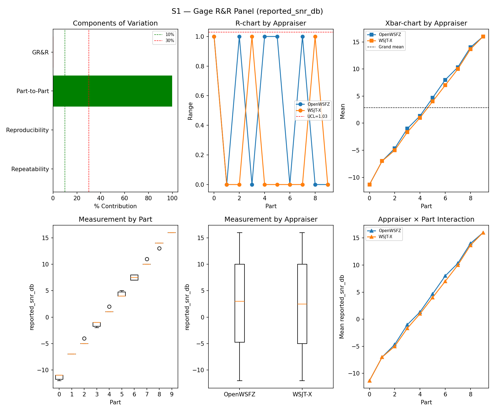
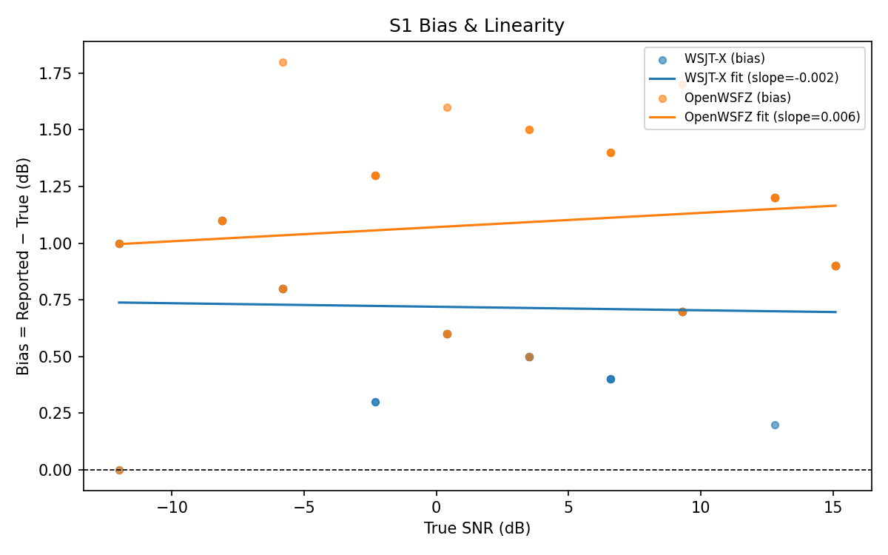
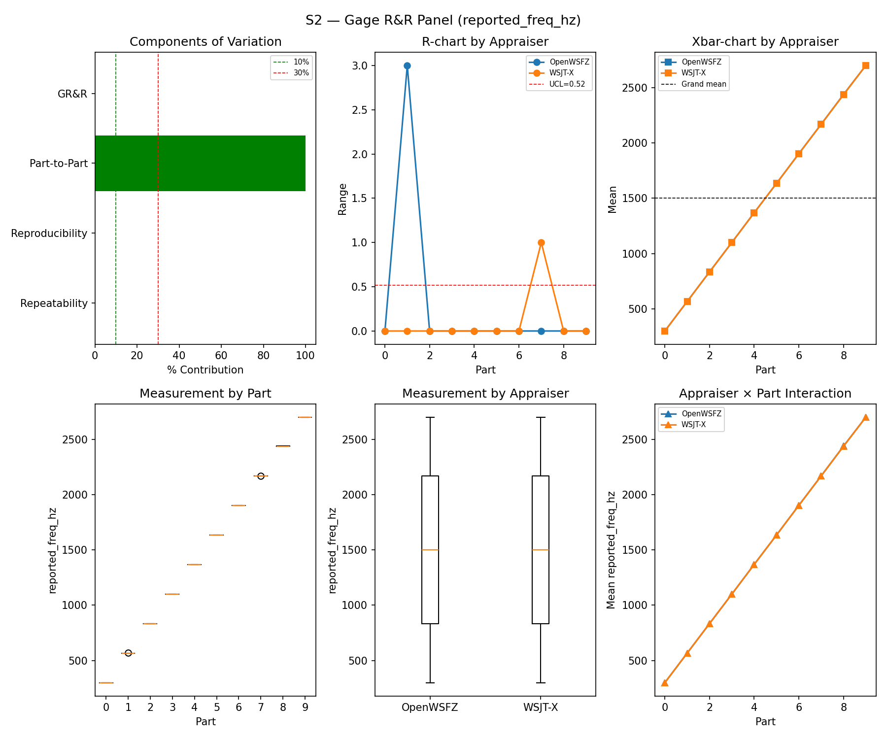
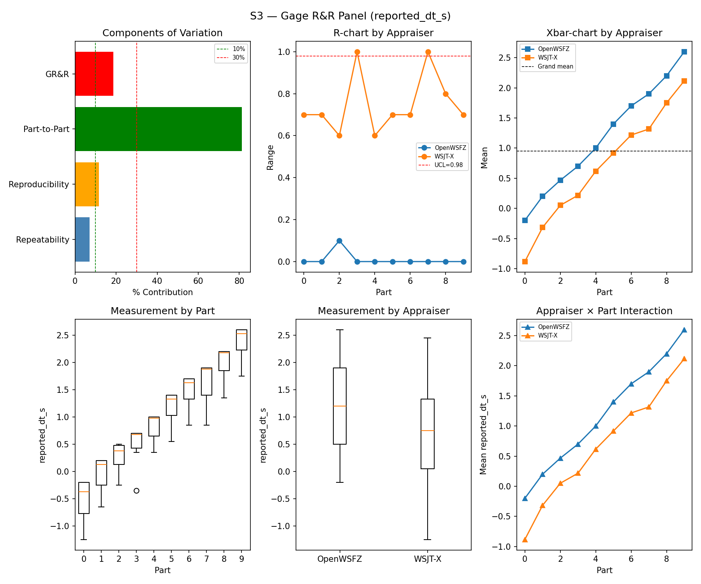
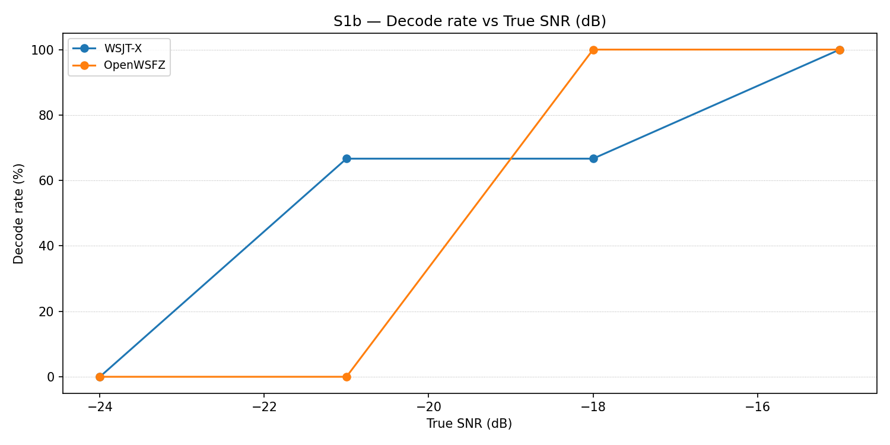
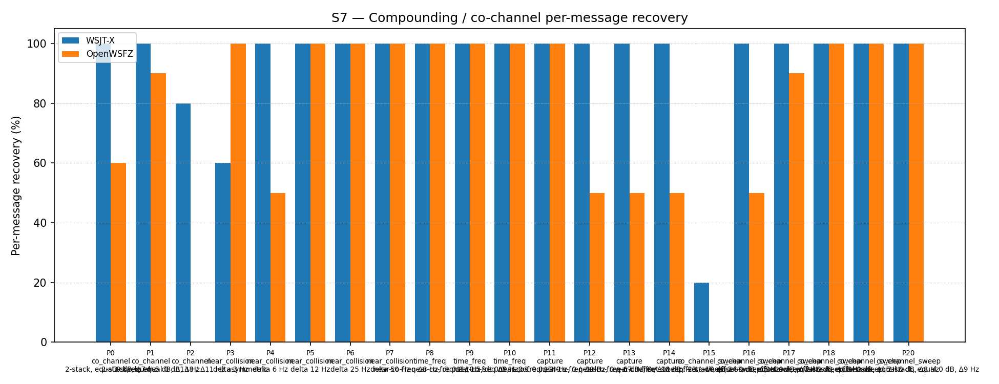
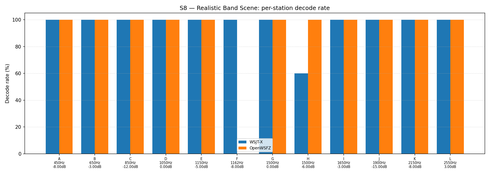

| Field | Value |
|---|---|
| Run date | 2026-08-29 |
| OpenWSFZ SHA | 872ba653ce880791c9e3eea587167aaed7cb7af1 (experiment/win-a-hamming-rung1, shim 20260047) |
| WSJT-X version | WSJT-X 2.7.0 (inferred from binary date 2025-02-04) |
| Baseline compared against | 2026-08-27-22b749c (results/2026-08-27-22b749c/report.md) — the last full S1–S8 sweep |
WIN-A Rung 1 arming run, run at the Captain's direction against branch experiment/win-a-hamming-rung1
@ 872ba65 (native monitor.c analysis window changed rectangular→Hamming, FT8_SHIM_VERSION
20260046→20260047), scope S7+S5 per the Captain's authorisation (29e45e2, 2026-08-29) and the
Architect's ruling clearing both open escalations (872ba65 itself, 2026-08-29 18:06Z: AC-4 does not
block arming, build non-reproducibility does not block the SHA pin). Not a status-check sweep like the
last full sweep (22b749c) — this is the pre-registered treatment evaluation for the WIN-A arm.
Four process/build events are recorded here for provenance:
src/OpenWSFZ.Daemon/bin/Release on disk predated this commit
(dated 2026-08-28, before the Rung 1 build landed) and would have silently run the pre-treatment
decoder. Rebuilt via dotnet build -c Release (0 warnings, 0 errors) immediately before the run;
confirmed via the daemon's own startup log and /api/v1/status that shim 20260047 was actually
loaded, not 20260046.ALL.TXT caught before use. The repo-root ALL.TXT (OpenWSFZ's own decode log) still
held 430 lines from the 2026-08-27 run. Backed up to
qa/rr-study/results/_pre-run-backups/ALL.TXT.stale-2026-08-27-backup-before-2026-08-29-run
(matching the existing convention there) and truncated before the daemon's writer touched it again —
confirmed safe live, since AllTxtWriter reopens the file per append rather than holding a handle.harness/run_scenario.py's per-trial cycle-boundary logic (_next_cycle_boundary(), called fresh
after every sd.wait()) reliably burned one full wasted 15 s slot per trial: a blocking, exactly-
one-slot-long sd.play()/sd.wait() call returns essentially exactly on the next boundary, and
_next_cycle_boundary()'s own "don't play into an already-started cycle" guard then advances a
further full slot every single time, deterministically — confirmed against the raw cycle=
timestamps in rr_study_2026-08-27_s1s8_full_run.log (uniform 30 s cadence, not 15 s). Fixed by
concatenating consecutive ordinary (exactly-one-slot, buffer_start_s == 0.0) trials into one
continuous buffer played with a single sd.play()/sd.wait() call, so trials after the first are
timed by the audio driver's own sample clock rather than a Python-side clock re-query; S3's two
re-gridded oversized parts (dt_s +2.4/+2.7) and S3b's early-armed negative-DT buffers are excluded
from batching and fall through to the original, unmodified single-trial path. Verified via dry-run
across all eight scenarios and a fake-clock/fake-sounddevice simulation of the full battery
(8460 s → 4422 s, 47.7% reduction) before this run — but simulation cannot model real USB/
Voicemeeter/WASAPI driver behaviour under one very long continuous buffer, and this run is the
first live use. See finding 3 below: it did not come through clean.22b749c, SD 0.000 across all 30 trials) to a noisy −1.200 s mean, SD 0.330 s
(range −0.8 to −1.8 s) in this run, while S1's SNR bias stayed flat for both appraisers in the same
run. This is real evidence of playback-timing jitter introduced by back-to-back batched playback
under real hardware (S3 batches 24 of its 30 trials into one ~360 s continuous buffer), not a
decoder effect. See Section 5 for the full analysis and consequence for S7.22b749c) despite both absolute figures
dropping ~4.65pp together. Consistent with holding, but not cleanly evaluable — see Finding 3;
the gap-preservation could reflect the treatment being immaterial to S7, or could be coincidental
given the timing-jitter confound discovered in the same run. See Section 5.| Component | σ² | %Contribution |
|---|---|---|
| Repeatability | 0.13 | 0.16% |
| Reproducibility | 0.07 | 0.09% |
| Part-to-Part | 83.14 | 99.75% |
| Total GR&R | 0.21 | 0.25% |
| Total | 83.34 | 100.00% |
| Metric | Value | Verdict |
|---|---|---|
| %Contribution (GR&R) | 0.25% | PASS |
| %Tolerance (GR&R) | 27.20% | — |
| %Study Var (GR&R) | 4.97% | — |
| ndc | 28 | PASS |

| Appraiser | Mean Bias (dB) | Slope | Intercept | R² | Verdict |
|---|---|---|---|---|---|
| WSJT-X | +0.72 | -0.002 | 0.720 | 0.002 | PASS |
| OpenWSFZ | +1.08 | 0.006 | 1.071 | 0.019 | PASS |

| Component | σ² | %Contribution |
|---|---|---|
| Repeatability | 0.17 | 0.00% |
| Reproducibility | 0.36 | 0.00% |
| Part-to-Part | 652924.74 | 100.00% |
| Total GR&R | 0.53 | 0.00% |
| Total | 652925.27 | 100.00% |
| Metric | Value | Verdict |
|---|---|---|
| %Contribution (GR&R) | 0.00% | PASS |
| %Tolerance (GR&R) | 54.68% | — |
| %Study Var (GR&R) | 0.09% | — |
| ndc | 1562 | PASS |

| Component | σ² | %Contribution |
|---|---|---|
| Repeatability | 0.07 | 7.00% |
| Reproducibility | 0.12 | 11.64% |
| Part-to-Part | 0.86 | 81.35% |
| Total GR&R | 0.20 | 18.65% |
| Total | 1.06 | 100.00% |
| Metric | Value | Verdict |
|---|---|---|
| %Contribution (GR&R) | 18.65% | MARGINAL |
| %Tolerance (GR&R) | 665.73% | — |
| %Study Var (GR&R) | 43.18% | — |
| ndc | 2 | MARGINAL |

WSJT-X DT correction applied. A +0.55 s offset was added to WSJT-X
reported_dt_sbefore ANOVA to remove the ≈ −0.55 s convention difference between WSJT-X (DT relative to nominal FT8 TX start) and the harness (DT relative to UTC slot boundary). This correction removes the calibration artefact from SS_appraiser so %GR&R measures genuine app-to-app measurement disagreement. Raw reported values are preserved in the matched CSV. See scenariowsjt_dt_correction_sfield and R&R-003 (GitHub #1).Caveat added 2026-08-30:
wsjt_dt_correction_s: 0.55above is of unknown accuracy — parts 8/9 of this S3 study are computed against truth mislabeled since 2026-06-06 by themodulator.pypositive-DT clamp defect, so 2 of the 10 S3 parts' Bias/Linearity/GR&R figures in this section are against known-wrong truth. Do not treat this section's numbers as clean pending a re-grid.
Decode rate (% of injected messages recovered) at SNRs excluded from the redesigned S1 ladder (−24 to −15 dB). Companion to S1; separates 'does it decode at this SNR?' from 'how accurately does it measure SNR?'. Informational — no AIAG threshold.
| Part | True SNR (dB) | WSJT-X decoded | WSJT-X rate | OpenWSFZ decoded | OpenWSFZ rate |
|---|---|---|---|---|---|
| P0 | -24.00 | 0/3 | 0.00% | 0/3 | 0.00% |
| P1 | -21.00 | 2/3 | 66.67% | 0/3 | 0.00% |
| P2 | -18.00 | 2/3 | 66.67% | 3/3 | 100.00% |
| P3 | -15.00 | 3/3 | 100.00% | 3/3 | 100.00% |
Overall decode rate — WSJT-X: 58.33% OpenWSFZ: 50.00%

κ is computed over a pooled population: S4 injected messages (truth = present) and S5 signal-free slots (truth = absent), so the truth vector has both classes. κ verdicts below are advisory — the §10 attribute gate is pending Captain ratification of this pooled method.
| Appraiser | TP | FN | FP | TN | Recovery | Specificity |
|---|---|---|---|---|---|---|
| WSJT-X | 69 | 39 | 0 | 60 | 63.89% | 100.00% |
| OpenWSFZ | 73 | 35 | 1 | 59 | 67.59% | 98.33% |
| Pair | κ | 95% CI | Verdict (advisory) |
|---|---|---|---|
| OpenWSFZ_vs_truth | 0.586 | [0.47, 0.70] | FAIL |
| WSJT-X_vs_truth | 0.558 | [0.45, 0.66] | FAIL |
| between_appraisers | 0.818 | — | MARGINAL |
| Appraiser | Consistent groups |
|---|---|
| WSJT-X | 76.32% |
| OpenWSFZ | 78.95% |
_S4 positives below the decodable-SNR floor are excluded (S5 negatives unchanged); shown alongside the full-population figures above per STUDY-SPEC.md §9.3's second ratification condition. Informational only — does not affect the §10 gate or the overall verdict.
| Appraiser | TP | FN | FP | TN | Recovery | Specificity |
|---|---|---|---|---|---|---|
| WSJT-X | 58 | 23 | 0 | 60 | 71.60% | 100.00% |
| OpenWSFZ | 63 | 18 | 1 | 59 | 77.78% | 98.33% |
| Pair | κ | 95% CI | Verdict (informational) |
|---|---|---|---|
| OpenWSFZ_vs_truth | 0.734 | [0.63, 0.84] | MARGINAL |
| WSJT-X_vs_truth | 0.682 | [0.57, 0.79] | FAIL |
| between_appraisers | 0.885 | — | MARGINAL |
| Appraiser | FP events / slots | Event rate | 95% UB | Decode rate | Verdict |
|---|---|---|---|---|---|
| WSJT-X | 0 / 60 | 0.00% | 4.87% | 0.00% | PASS |
| OpenWSFZ | 1 / 60 | 1.67% | 7.66% | 1.67% | FAIL |
Gate (STUDY-SPEC §10, ratified 2026-07-04, R&R-004): the per-slot FP event rate, gated on its one-sided 95% Clopper–Pearson upper bound (PASS iff 95% UB ≤ 6%). The UB is defined for all event counts (≈ 3 / N_slots at 0 events) and bounds the true per-slot FP probability at 95% confidence rather than the Poisson-noisy point estimate. Decode rate is reported for reference only. INFO means the gate is not evaluated at this N: below 49 slots, even zero observed events cannot clear the 6% ceiling, so no outcome at this sample size can produce a PASS or a meaningful FAIL — see a properly powered run (N ≥ 49) for the ratified §10 verdict.
Per-message recovery when 2–3 signals occupy the same or near-same audio frequency / time slot (the pileup case S4 does not exercise). Informational — no AIAG threshold is defined for co-channel separation.
| Overlap family | WSJT-X | OpenWSFZ |
|---|---|---|
| capture | 100.00% | 62.50% |
| co_channel | 91.43% | 42.86% |
| co_channel_sweep | 86.67% | 73.33% |
| near_collision | 92.00% | 90.00% |
| time_freq | 100.00% | 100.00% |
| all | 93.02% | 73.95% |
| Signal | WSJT-X | OpenWSFZ |
|---|---|---|
| strong | 100.00% | 100.00% |
| weak | 100.00% | 25.00% |
Between-app per-signal agreement: 77.21%
| Part | Family | Condition | WSJT-X | OpenWSFZ |
|---|---|---|---|---|
| P0 | co_channel | 2-stack, equal 0 dB, Δ7 Hz | 10/10 | 6/10 |
| P1 | co_channel | 2-stack, equal -5 dB, Δ13 Hz | 10/10 | 9/10 |
| P2 | co_channel | 3-stack, equal 0 dB, Δ8 / Δ11 Hz asymmetric | 12/15 | 0/15 |
| P3 | near_collision | delta 3 Hz | 6/10 | 10/10 |
| P4 | near_collision | delta 6 Hz | 10/10 | 5/10 |
| P5 | near_collision | delta 12 Hz | 10/10 | 10/10 |
| P6 | near_collision | delta 25 Hz | 10/10 | 10/10 |
| P7 | near_collision | delta 50 Hz | 10/10 | 10/10 |
| P8 | time_freq | near-co-freq Δ8 Hz, dt 0.0 / 0.5 s | 10/10 | 10/10 |
| P9 | time_freq | near-co-freq Δ11 Hz, dt 0.0 / 1.0 s | 10/10 | 10/10 |
| P10 | time_freq | near-co-freq Δ9 Hz, dt 0.0 / 2.0 s | 10/10 | 10/10 |
| P11 | capture | near-co-freq Δ14 Hz, 0 / -3 dB | 10/10 | 10/10 |
| P12 | capture | near-co-freq Δ9 Hz, 0 / -6 dB | 10/10 | 5/10 |
| P13 | capture | near-co-freq Δ7 Hz, 0 / -10 dB | 10/10 | 5/10 |
| P14 | capture | near-co-freq Δ11 Hz, +3 / -10 dB | 10/10 | 5/10 |
| P15 | co_channel_sweep | offset-sweep: 2-stack, equal 0 dB, Δ5 Hz | 2/10 | 0/10 |
| P16 | co_channel_sweep | offset-sweep: 2-stack, equal 0 dB, Δ7 Hz | 10/10 | 5/10 |
| P17 | co_channel_sweep | offset-sweep: 2-stack, equal 0 dB, Δ10 Hz | 10/10 | 9/10 |
| P18 | co_channel_sweep | offset-sweep: 2-stack, equal 0 dB, Δ15 Hz | 10/10 | 10/10 |
| P19 | co_channel_sweep | offset-sweep: 2-stack, equal 0 dB, Δ8 Hz | 10/10 | 10/10 |
| P20 | co_channel_sweep | offset-sweep: 2-stack, equal 0 dB, Δ9 Hz | 10/10 | 10/10 |

Holistic decode-rate benchmark: 12 simultaneous stations across 450–2550 Hz at realistic SNR spread (−15 to +3 dB), including a near-collision pair (E/F, 12 Hz apart) and a capture pair (G/H, co-frequency, 6 dB ratio). Informational only — no PASS/FAIL gate.
| Appraiser | Decoded | Injected | Rate |
|---|---|---|---|
| WSJT-X | 58 | 60 | 96.67% |
| OpenWSFZ | 55 | 60 | 91.67% |
Between-appraiser delta (OpenWSFZ − WSJT-X): -5.0 pp
| Stn | Freq (Hz) | SNR (dB) | WSJT-X decoded/total | OpenWSFZ decoded/total |
|---|---|---|---|---|
| A | 450 | -8.00 | 5/5 | 5/5 |
| B | 650 | -3.00 | 5/5 | 5/5 |
| C | 850 | -12.00 | 5/5 | 5/5 |
| D | 1050 | 0.00 | 5/5 | 5/5 |
| E | 1150 | -5.00 | 5/5 | 5/5 |
| F | 1162 | -8.00 | 5/5 | 0/5 |
| G | 1500 | 0.00 | 5/5 | 5/5 |
| H | 1500 | -6.00 | 3/5 | 5/5 |
| I | 1650 | -3.00 | 5/5 | 5/5 |
| J | 1900 | -15.00 | 5/5 | 5/5 |
| K | 2150 | -8.00 | 5/5 | 5/5 |
| L | 2550 | 3.00 | 5/5 | 5/5 |

| Metric | Scope | Value | Verdict |
|---|---|---|---|
| %GR&R | S1 | 0.2% | PASS |
| ndc | S1 | 28 | PASS |
| %GR&R | S2 | 0.0% | PASS |
| ndc | S2 | 1562 | PASS |
| %GR&R | S3 | 18.6% | MARGINAL |
| ndc | S3 | 2 | MARGINAL |
| Kappa (advisory) | WSJT-X_vs_truth | 0.558 | FAIL |
| Kappa (advisory) | OpenWSFZ_vs_truth | 0.586 | FAIL |
| Kappa (advisory) | between_appraisers | 0.818 | MARGINAL |
| FP event rate (95% UB) | S5/WSJT-X | 0/60 slots (event 0.0%; 95% UB 4.87%; decode 0.0%) | PASS |
| FP event rate (95% UB) | S5/OpenWSFZ | 1/60 slots (event 1.7%; 95% UB 7.66%; decode 1.7%) | FAIL |
| SNR bias | S1/WSJT-X | +0.72 dB | PASS |
| SNR bias | S1/OpenWSFZ | +1.08 dB | PASS |
Overall verdict: FAIL
22b749c, 2026-08-27)| Metric | 2026-08-27 | 2026-08-29 (this run) | Δ | Note |
|---|---|---|---|---|
| S1 %GR&R / ndc | 0.3% / 24 | 0.25% / 28 | ~same | PASS both |
| S1 bias, WSJT-X | +0.75 dB | +0.72 dB | ~same | PASS |
| S1 bias, OpenWSFZ | +1.22 dB | +1.08 dB | −0.14 dB | Still PASS |
| S2 %GR&R / ndc | 0.0% / 1503 | 0.0% / 1562 | ~same | Eleventh consecutive run at exactly 0.0% |
| S3 %GR&R / ndc | 0.4% / 21 PASS | 18.65% / 2 MARGINAL | large | 🔴 Confounded — see Finding 1, not a decoder result |
| S1b decode rate, WSJT-X / OpenWSFZ | 58.33% / 50.00% | 58.33% / 50.00% | identical | Coincidence at N=12, not a finding |
| Kappa vs truth (WSJT-X / OpenWSFZ) | 0.558 / 0.588 | 0.558 / 0.586 | ~flat | Both advisory FAIL, unchanged |
| Kappa between appraisers | 0.818 | 0.818 | unchanged | MARGINAL both runs |
| S5 FP, WSJT-X / OpenWSFZ | 0/60 PASS / 0/60 PASS | 0/60 PASS / 1/60 FAIL | new FAIL | Single event; see Finding 2 |
| S7 "all" recovery, WSJT-X / OpenWSFZ | 97.67% / 78.60% | 93.02% / 73.95% | both −4.65pp | Gap unchanged (19.07pp both) — see Finding 1 |
| S7 P2 (3-stack co-channel), OpenWSFZ | 0/15 | 0/15 | unchanged | Structural limit persists (open under D-001), waived by Captain 2026-06-22 |
| S8 overall, WSJT-X / OpenWSFZ | 96.67% / 91.67% | 96.67% / 91.67% | identical | — |
S3 measures DT (timing) precision, and it is the scenario the new back-to-back batching concatenates most aggressively (24 of its 30 trials in one continuous ~360 s buffer). Its result moved from PASS to MARGINAL, and the diagnostic evidence points squarely at the harness, not the decoder:
Baseline (22b749c, unbatched) |
This run (batched) | |
|---|---|---|
| WSJT-X DT residual (reported − true) | −0.800 s, SD = 0.000 (flat, all 30 trials) | −1.200 s mean, SD = 0.330 s, range −0.8 to −1.8 s |
| OpenWSFZ DT residual | −0.177 s, SD 0.042 | −0.153 s, SD 0.050 (essentially unchanged) |
| S1 SNR bias (both apps, same run) | ~unchanged | ~unchanged |
WSJT-X's own code did not change between these two runs. Its DT reference going from a perfect constant to a noisy, larger-magnitude offset — while SNR estimation (which integrates over the whole slot and is insensitive to sub-second timing) stayed flat in the same run — is the signature of real playback-timing jitter, not a decode-quality change. Per-trial residuals oscillate rather than grow monotonically (ruled out simple linear sample-clock drift over the long buffer; more likely intermittent buffer-boundary behaviour in the real Voicemeeter/WASAPI path under one very long continuous stream — not further diagnosed this session).
Consequence for S7 (the arm's actual metric): S7 depends on precise per-signal timing/frequency separation — that is the entire mechanism the scenario tests. The OpenWSFZ-vs-WSJT-X gap held exactly constant (19.07pp, both runs) despite both absolute figures dropping together, which is consistent with the jitter being immaterial to S7's outcome, but does not prove it — the same coincidence could arise from an unrelated shared cause (e.g. real off-air band conditions differing between sessions, also plausible given both are live captures on different days). Recommend treating this run's S7 result as provisional, not a clean arm of the S7+S5 gate, pending either (a) a re-run with batching bounded to a small, verified-safe size, or (b) an Architect/Captain judgement that gap-preservation is convincing enough on its own despite the caveat.
The one genuine S5 false positive (correctly windowed to the scenario's own 60 injection cycles, not
the raw S5_matched.csv — see Finding 3) is OpenWSFZ decoding CS-bc7b58 CS-1811db/P OE65 out of pure AWGN
at 17:36:15Z, reported SNR −26 dB. Baseline was 0/60 for both appraisers; this run is 0/60 WSJT-X /
1/60 OpenWSFZ, which flips the 95% Clopper–Pearson UB from 4.87% to 7.66%, crossing the ratified 6%
line. Precedent in this study's own history (22b749c's own hedge on its predecessor's 4/120 FAIL, and
the trend table in Section 6 below) treats single small-N FP swings as ordinary tail variance until a
second occurrence — the same posture is recommended here, not an escalation on this evidence alone,
though it should not be waved away either given it sits alongside Finding 1's timing-jitter discovery
in the very same run.
matcher.py Pass 2 is not scoped to the scenario's own injection window (pre-existing, not new)While investigating Finding 2, S5_matched.csv was found to contain 417 false_positive=True
OpenWSFZ rows, not the reported 1 — spanning 16:49:15Z to 18:05:00Z, over an hour, well outside
S5's actual ~15-minute injection window. Root cause: _match_appraiser() (harness/matcher.py:128-189)
Pass 2 iterates every slot bucket built from the entire ALL.TXT (all scenarios, plus real off-air
decodes for the whole ~90-minute session) rather than scoping to the scenario's own truth-row cycles;
anything not consumed by that scenario's own matching becomes an "FP" for it, including S1's, S3's,
and S7's own genuine messages and real off-air callsigns picked up mid-session. The reported gate
number is not affected — analyse.py's _compute_fp_rates() (line ~705) independently re-windows
to s5_cycles before counting, which is why report.md's "1/60" is correct despite the raw CSV holding
417 rows. This is a pre-existing defect (predates this session, likely present in every historical
S5 gate run identically, silently, since only S5's own gate metric ever reads the false_positive
column) with two consequences worth fixing, neither urgent: (a) every scenario's _matched.csv
false_positive rows are similarly unscoped, so any future metric that reads that column beyond S5
would need the same re-window analyse.py already does; (b) real off-air callsigns (e.g. CS-bc7b58,
CS-b96331, CS-91d9fd) end up in per-scenario matched CSVs rather than only the session-wide raw log —
the matched CSVs are confirmed still .gitignored and not committed, but the blast radius of "which
file might have a real callsign in it" is wider than it should be.
Correction, redacted 2026-08-30: this paragraph originally named the three off-air callsigns above in plaintext and asserted that, because the matched CSVs are gitignored, "no NFR-021 exposure occurred." The CSV half of that claim was and is correct; the report itself naming the calls in the same sentence was the exposure the claim overlooked. The three tokens (plus a fourth in Finding 2 above) have been redacted to their
CS-fingerprints per NFR-021; see2026-08-30-1204-architect-to-qa-TODO-pre-merge-nbr-a-branch.mditem 1 for the full account.
harness/run_scenario.py's batch size (e.g. cap concatenated-buffer duration at some
small, empirically-verified-safe limit) rather than batching a whole scenario in one call, or
revert to per-trial playback for any DT-sensitive scenario (S3) specifically. QA tooling only, no
separate Developer session required (HK-011).matcher.py Pass 2 to the scenario's own injection-cycle set, matching what analyse.py
already does downstream, so the artefact on disk matches the number actually reported and the
real-callsign blast radius shrinks to just the raw session log. Low priority — no reported number
is currently wrong.All thirteen runs that exercised the complete controlled battery (S1/S2/S3/S7 at minimum), oldest
first. %GR&R is each stage's own Summary-table figure (AIAG %Contribution, threshold ≤ 10% PASS). S5
FP is the per-slot event rate. S7/S8 are the "all"/overall decode-recovery percentages.
| Date | SHA | S1 %GR&R | S2 %GR&R | S3 %GR&R | S5 FP (WSJT-X / OpenWSFZ) | S7 recovery (WSJT-X / OpenWSFZ) | S8 decode rate (WSJT-X / OpenWSFZ) |
|---|---|---|---|---|---|---|---|
| 2026-06-06 | 4c34ef6 |
32.0% FAIL | 0.0% | 3.8% | 0.0% / 0.0% | 78.5% / 47.3% | — |
| 2026-06-06 | 6bab388 |
6.5% | 0.0% | 3.9% | 0.0% / 0.0% | 77.4% / 46.2% | — |
| 2026-06-07 | 4b3a4ca |
1.4% | 0.0% | 3.4% | 0.0% / 0.0% | 76.3% / 54.8% | 95.0% / 86.7% |
| 2026-06-14 | 815b652 |
0.3% | 0.0% | 3.0% | 0.0% / 0.0% | 77.4% / 50.5% | 95.0% / 83.3% |
| 2026-06-20 | 6e821fa |
0.4% | 0.0% | 3.0% | 0.0% / 91.7% FAIL | 92.6% / 70.2% | 93.3% / 86.7% |
| 2026-06-22 | f11f438 |
0.4% | 0.0% | 3.1% | 0.0% / 0.0% | 93.9% / 74.4% | 93.3% / 86.7% |
| 2026-07-04 | 793a298 |
0.5% | 0.0% | 3.4% | 0.0% / 0.0% | 96.3% / 73.0% | 93.3% / 86.7% |
| 2026-08-05 | 3bd4cd0 |
7.2% | 0.0% | 3.6% | 0.0% / 0.0% | 96.3% / 70.2% | 93.3% / 83.3% |
| 2026-08-15 | 8d6e1b1 |
0.5% | 0.0% | 1.4% | 0.0% / 0.8% | 95.3% / 74.4% | 93.3% / 86.7% |
| 2026-08-21 | 7d36038 |
0.3% | 0.0% | 0.4% | 0.0% / 0.8% | 95.3% / 68.4% | 96.7% / 83.3% |
| 2026-08-22 | f5dec23 |
0.4% | 0.0% | 0.4% | 0.0% / 3.3% FAIL | 98.1% / 79.5% | 91.7% / 91.7% |
| 2026-08-27 | 22b749c |
0.3% | 0.0% | 0.4% | 0.0% / 0.0% | 97.7% / 78.6% | 96.7% / 91.7% |
| 2026-08-29 | 872ba65 |
0.25% | 0.0% | 18.65%¹ | 0.0% / 7.66% FAIL | 93.0% / 74.0% | 96.7% / 91.7% |
¹ Not comparable to the S1–S3 series above it — confounded by a harness playback-timing defect
discovered in this same run (Section 5, Finding 1), not a decoder result. First run of the
experiment/win-a-hamming-rung1 (Rung 1 Hamming window) treatment; also the first run using the
back-to-back batched-playback harness — both landed in the same sweep, which is itself a process
lesson (don't change measurement tooling and the thing under test in the same run again).
Reading it: thirteen full sweeps now, four ratified-gate failures — the one S1 FAIL (2026-06-06), two S5 FAILs prior to this run (2026-06-20, fixed by D-009; 2026-08-22, resolved by the 2026-08-27 rerun), and this run's S5 FAIL (single event, Finding 2, unresolved). S7's OpenWSFZ-vs-WSJT-X gap held exactly steady this run (19.07pp) even as both absolute figures dropped together — first sweep where that gap is worth reading skeptically given Finding 1, rather than at face value like every prior row.
Caveat, kept brief (carried forward unchanged): S1/S3 were redesigned 2026-06-06 (R&R-005/R&R-003); the S5 metric moved from plain decode-rate to a gated Clopper–Pearson event rate 2026-07-04/08-05 (R&R-004); S5's default N dropped from 120 to 60 slots starting 2026-08-27 (R&R-009, AWGN parts only). Early-vs-late numbers are as-reported; treat cross-redesign comparisons as directional, not strictly statistical.